Securely access your devices anywhere with Tailscale
Have you ever wanted to connect to your home network while away from home? Or have you wanted to let someone else connect to a something you’re hosting locally? Tailscale makes this possible by creating private, encrypted networks that connect your devices and services seamlessly. With support for Windows, MacOS, Linux, iOS, and Android - plus a generous free tier for up to 3 users and 100 devices - it’s an excellent solution for both engineers and more casual users.
Why I love Tailscale
Before I found Tailscale, if I wanted to connect remotely to machines on my home network, I’d have to wrestle with my ISP to get a static IP address, know my home network’s public IP, configure my router to listen for me, and manually navigate the maze of SSH and firewall security configurations. And if I wanted to connect remotely via my phone, well, I wouldn’t have had the first idea how to do that safely.
Tailscale transforms this experience. Here’s what it enables me to do:
Remote SSH Access: Connecting to my homelab server is now trivially simple. I enter this command,
tailscale ssh homelab-name, open the returned URL, and authenticate in a browser, and I get access to my private network Tailscale (aka my tailnet). No more fighting network configurations, movingsshkeys around, editing~/.ssh/authorized_keys, debugging terrible doublt-NAT setups, or navigating networking headaches.Remote Service Access: Reaching services running on my homelab is beautifully straightforward. For example, I built and run a data warehousing platform on my homelab server,
matt-lab. If I’m out and about but I want to update a dataset, thanks to Tailscale, I can run the dataset’s ELT pipeline through my platform’s Airflow web UI (on port8080) by pulling out my phone and openingmatt-lab:8080in a browser. Or if I was struck by a data question, thanks to Tailscale, I can explore datasets and run queries through my platform’s Superset UI (on port8088) by going tomatt-lab:8088.
| 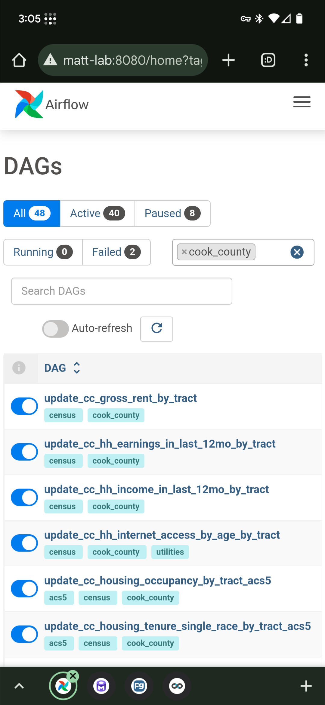 | 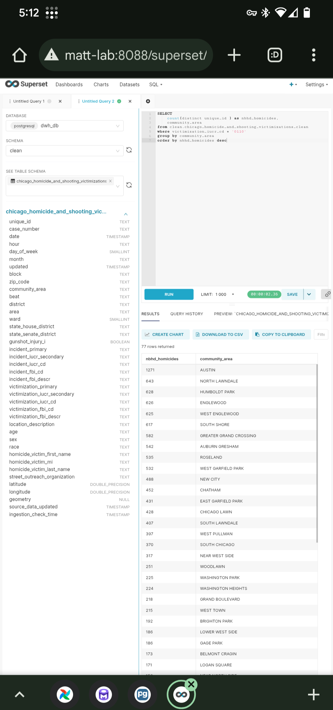 |
|---|---|
| Accessing ELT pipeline DAGs in Airflow | Running a query through Superset |
All this magic happens thanks to Tailscale’s sophisticated under-the-hood technology, but you don’t need to understand the complexity to enjoy the benefits.
Overview of steps to set up a Tailscale Tailnet
- Create a tailscale account.
- Optional: Invite other users to your tailnet.
- Install the tailscale client on each device you want to connect in the network.
- Configure your tailnet’s ACLs (Access Control Lists) to control which devices users can access.
- define groups, specify which devices each group should be able to access, and add users to groups.
- Configure a Homelab to accept incoming
sshconnections
Tailscale Client Installation on a MacOS Machine
To be able to use tailscale ssh from a macOS machine, you have install the open source tailscaled variant per these instructions.
If golang isn’t installed, download and install golang and make sure the go binary is in a dir on the system’s PATH.
Then, run these commands
go install tailscale.com/cmd/tailscale{,d}@main
sudo $HOME/go/bin/tailscaled install-system-daemon
tailscale upEnabling MagicDNS
You might have to manually add your tailnet’s DNS server IP address to your MacOS-running-machine’s DNS servers. Go into system settings, search for DNS, and add IP address “100.100.100.100” ahead of the existing IP address (Most routers use “192.168.0.1”). If you sometimes connect to Wi-Fi and other times use ethernet, you’ll probably have to do this for both connection modes.
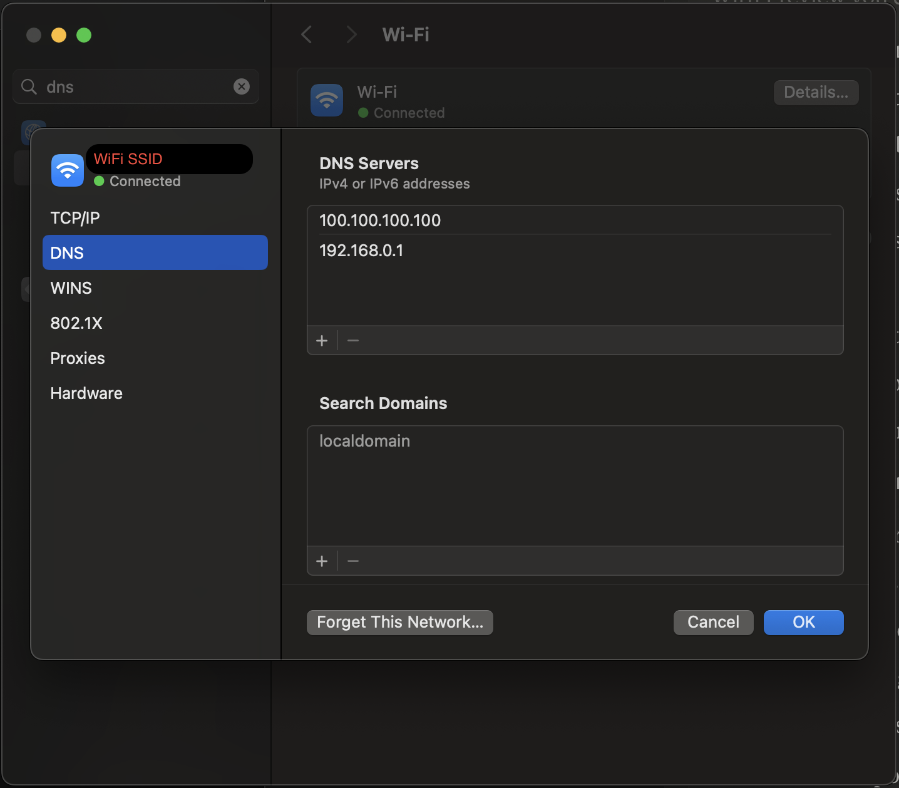
Tailscale Client Installation on a Windows Machine
I don’t have a current Windows device, but I remember it being pretty straightforward. The official instructions look straightforward (download and run an installer, then log in).
Tailscale Client Installation on an Android Phone
- Install the android tailscale client from the Play Store.
- Launch the app.
- click Get Started.
- approve the prompt to set up a VPN connection.
- Log in to your tailscale account.
- Approve the device in the admin console.
Tailscale Client Installation on an iPhone
The steps should be mostly the same as on Android, except installing from the App Store rather than the Play Store. I don’t have an iOS device, so I’ll defer to the official install instructions).
| 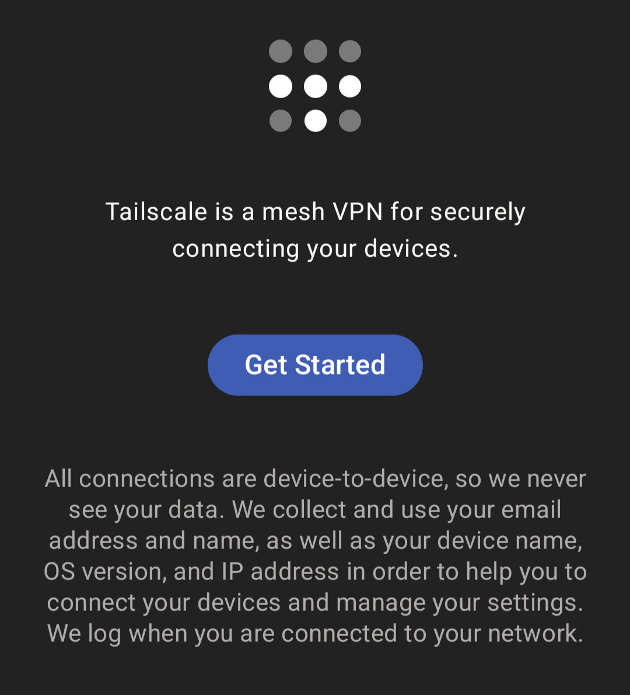 | 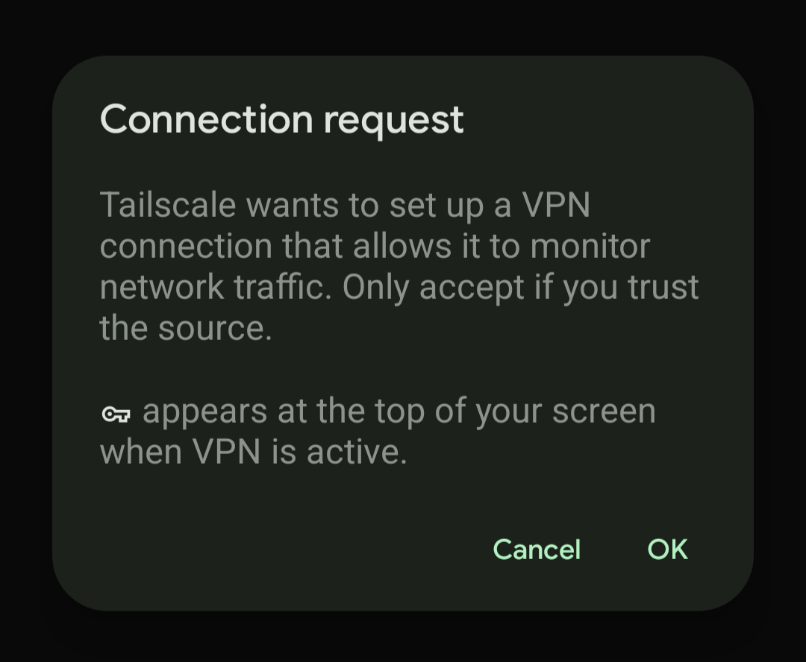 |
|---|---|
| 2.1. Get Started | 2.2. Click OK to allow a VPN connection |
| 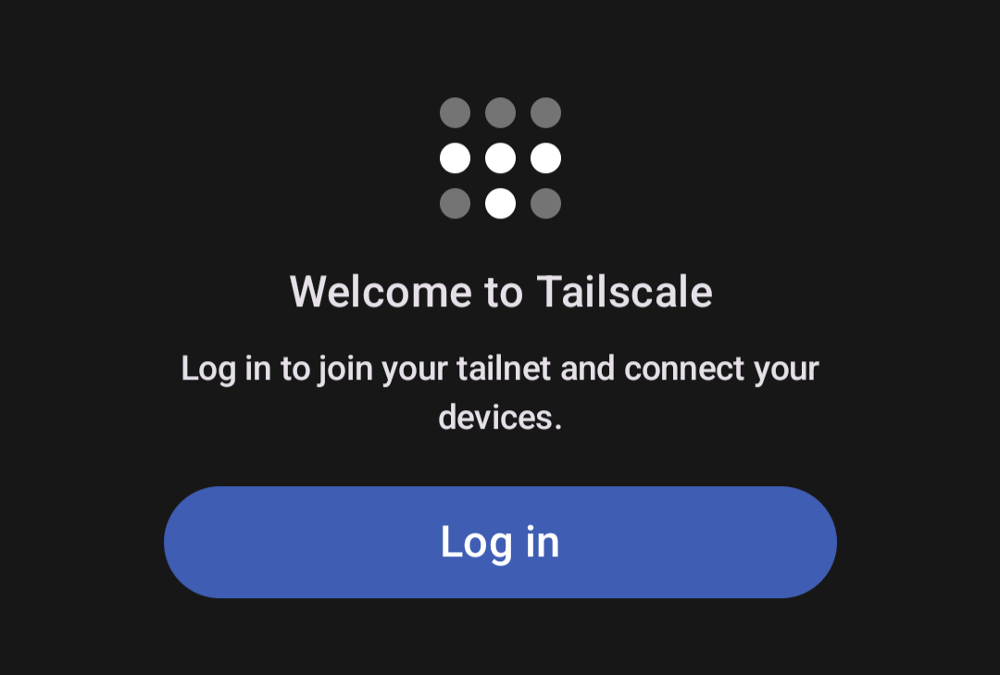 | 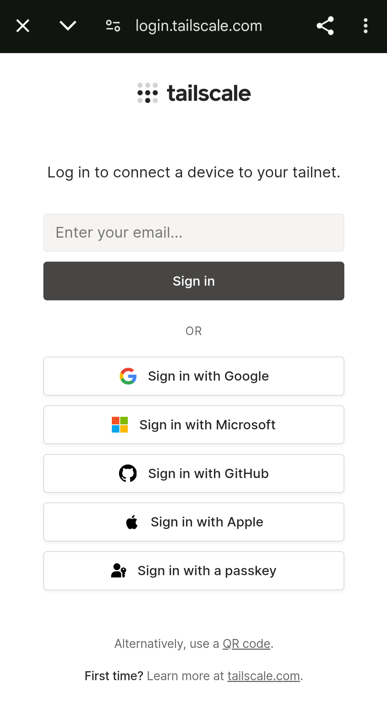 |
|---|---|
| 3. Log in | 3. via the method used when signing up |
| 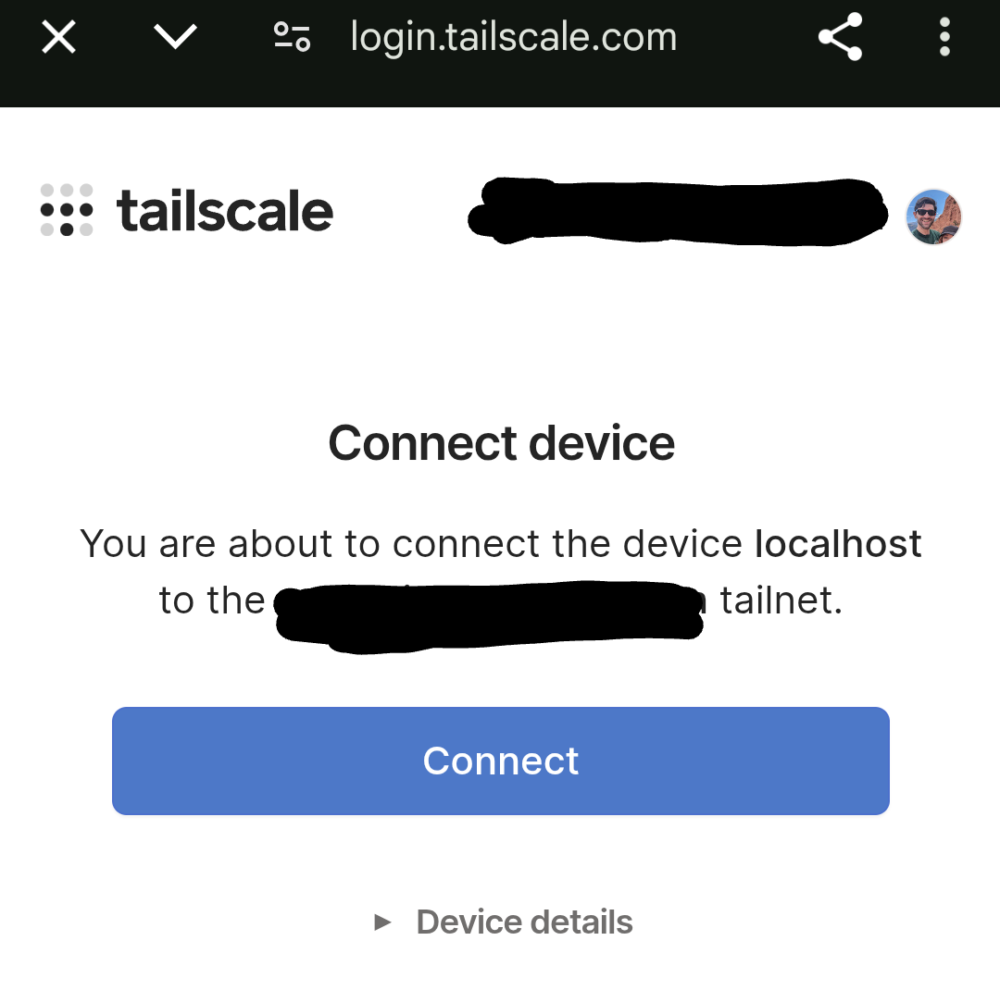 | 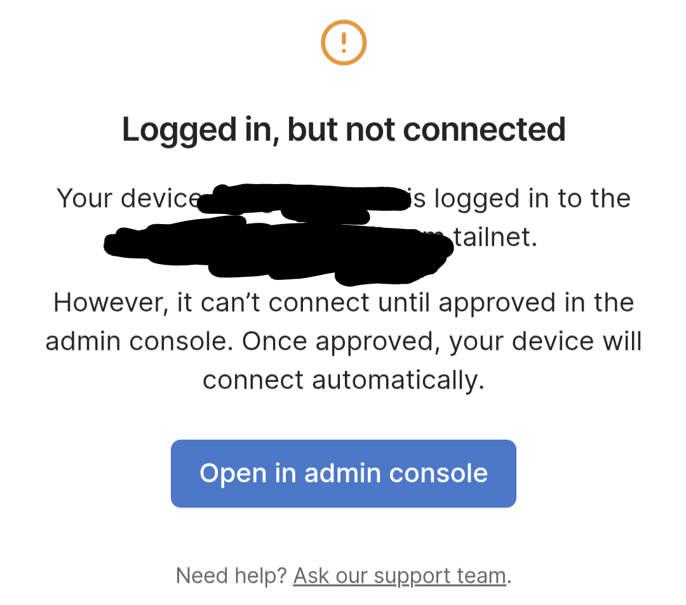 |
|---|---|
| 4. Connect the device | 4. Open up the Admin console |
Then click Approve (not pictured, too much to redact).
Setting up ACLs
Tailscale allows us to easily network and connect to devices, but you may not want to grant all network users access to all devices. Tailscale has a robust Role Based Access Control framework that allows you to define maintainable and concise access control logic in your ACL file.
The ACL syntax supports very granular controls, but here’s the core logic for the main fields:
In groups: define a group for each role you want your network to support (e.g., admin, dev, ci, prod, etc) and specify the users in the group.
In tagOwners: define a tag for each device grouping you want to support, and specify which users/groups are allowed to apply that tag to devices.
In acls: define which users/groups (sources, or src) can connect to which destination devices and ports (dst).
In ssh: define which users/groups (src) can
sshinto which devices (dst), the actionsshtake (either just accept the connection request or check the user by requiring reauthentication every 12 hours), and the username(s) that src members cansshinto.In tests: define tests that check that specified users/gropups can or cannot connect to specified device-ports.
- These tests run whenever the ACL file is saved.
In sshTests: define tests that check that specified groups can or cannot
sshinto specified usernames on specified devices and face the correct authentication scrutiny.- these tests also run whenever the ACL file is saved.
Simple ACL policy specification
This ACL policy facilitates a secure single-user tailnet. Just copy it into your ACL file and update the sections with a “Replace …” comment.
// ACL for a small or single-user network
{
// Define access control lists for users, groups, autogroups, tags,
// Tailscale IP addresses, and subnet ranges.
// Declare static groups of users. Use autogroups for all users or users with a specific role.
"groups": {
// replace that email with the emails associated to the tailscale accounts of "admin" users
"group:admin": ["admin_user_email@email.com"],
},
// Define the tags which can be applied to devices and by which users.
"tagOwners": {
"tag:homelab": ["group:admin"],
"tag:workstation": ["group:admin"],
"tag:container": ["autogroup:admin"],
},
"acls": [
// Allow all connections from admin group members.
{"action": "accept", "src": ["group:admin"], "dst": ["*:*"]},
// Allow users to access their own devices.
{
"action": "accept",
"src": ["autogroup:member"],
"dst": ["autogroup:self:*"],
},
],
// Define users and devices that can use Tailscale SSH.
"ssh": [
// Allow all users to SSH into their own devices in check mode.
{
"action": "check",
"src": ["autogroup:member"],
"dst": ["autogroup:self"],
"users": ["autogroup:nonroot"],
},
// Allow the user with email admin_user_email@email.com to ssh into any
// non-root username on any device with the homelab tag
{
"action": "check",
"src": ["admin_user_email@email.com"],
"dst": ["tag:homelab"],
"users": ["autogroup:nonroot"],
},
// Allow members of the admin group to ssh into the admin username on
// any any device with the homelab tag
{
"action": "check",
"src": ["group:admin"],
"dst": ["tag:homelab"],
// replace "admin" with the username you want to ssh into on dest machine
"users": ["admin"],
},
],
// Test access rules every time they're saved.
"tests": [
{
"src": "alice@example.com",
"deny": [
"tag:homelab:22",
"tag:homelab:80",
"tag:homelab:443",
"tag:homelab:8080"
],
},
{
"src": "admin_user_email@email.com",
"accept": [
"tag:homelab:22",
"tag:homelab:80",
"tag:homelab:443",
"tag:homelab:8080"
],
},
],
"sshTests": [
{
"src": "group:admin",
"dst": ["tag:homelab"],
"check": ["group:admin"],
"deny": ["root"],
},
{
"src": "admin_user_email@gmail.com",
"dst": ["tag:homelab"],
"check": ["group:admin"],
"deny": ["root"],
},
],
}Configure the homelab host to accept ssh connections
Open the admin console then edit the ACL tags for the Homelab device.
In the Edit ACL Tags interface, click the Add tags dropdown and select the tag:homelab option. Note that these options were defined in the tagOwner section of ACL policy file.
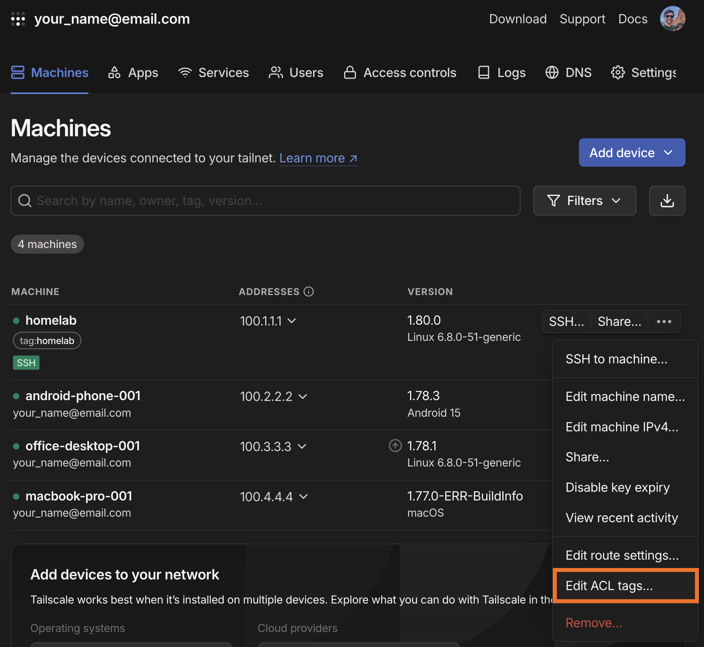
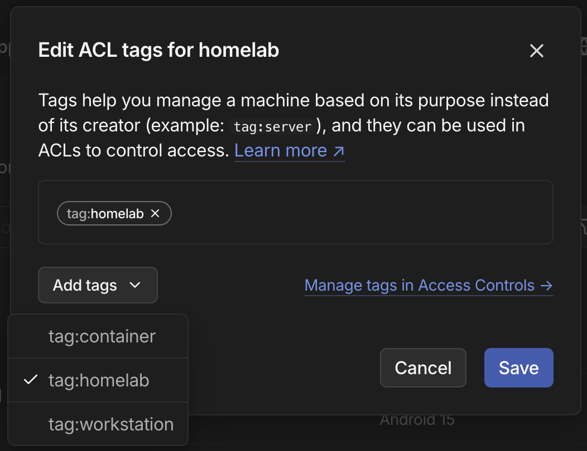
Now, from a terminal on the homelab machine, run this command to direct tailscale to start up in ssh mode, which will persist even after rebooting.
sudo tailscale up --sshNow you can ssh into the homelab machine from another tailscale-connected machine via this command (replace “admin” for your username on that machine and “homelab” with whatever label you’ve given tailscale for that device).
tailscale ssh admin@homelabConclusion
This post only scratches the surface of what you can stand up with tailscale, and still, I feel like I should have split it up across a few smaller posts.
In any case, in this post, we’ve covered: * how to install tailscale on all major device operating systems, * a basic ACL configuration and what the parts mean, * how to configure a machine to accept incoming ssh connections
In future posts, I should write up how and why to build a homelab machine and how to build or configure LLM applications and serve them on locally on your tailnet.